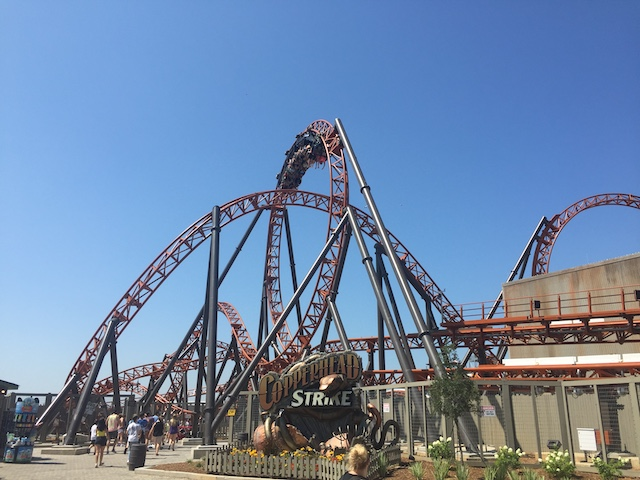
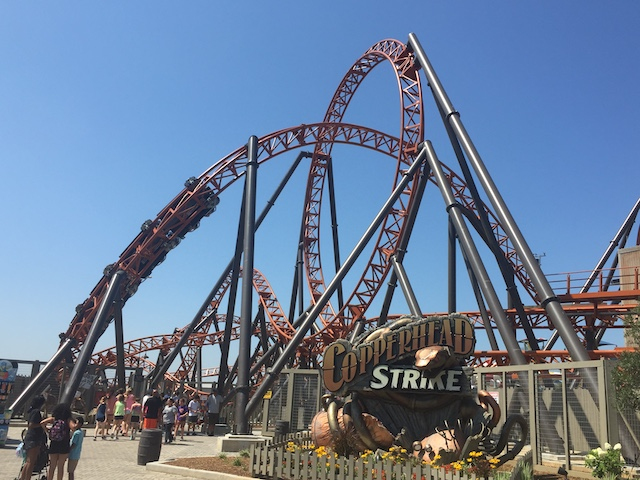
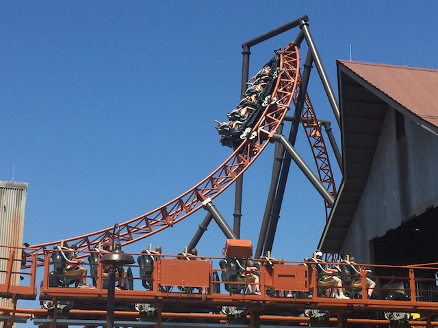
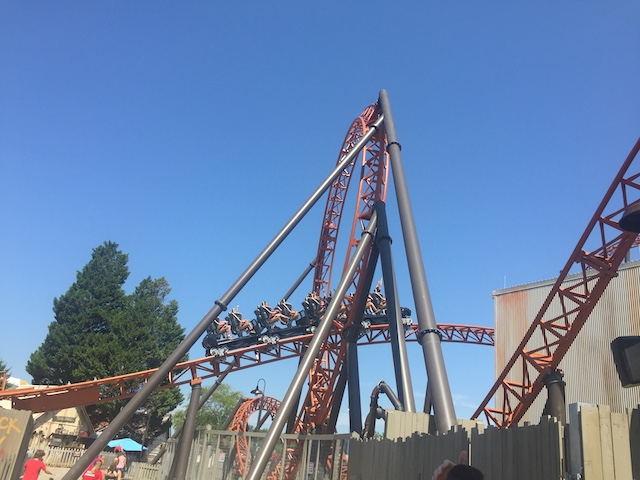
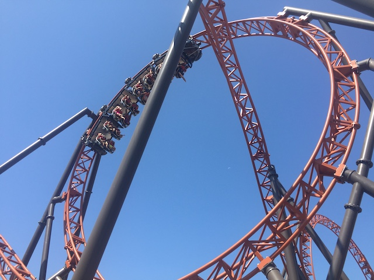
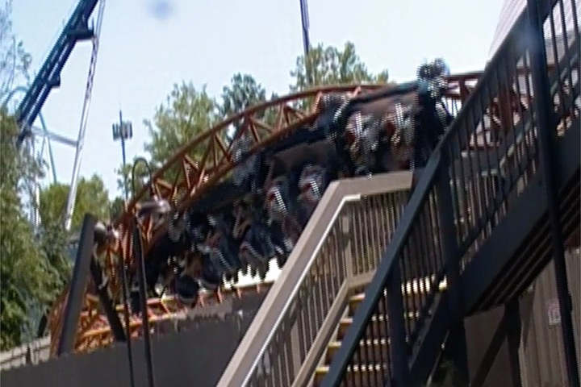
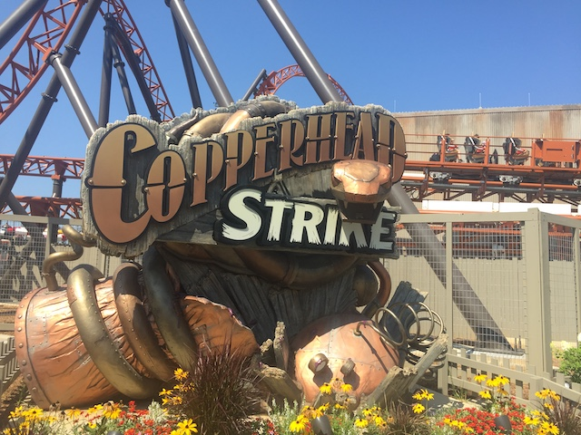

| |
Copperhead Strike Review

Today, we'll be reviewing Copperhead Strike. This is another custom Mack Launched Coaster, this one at Carowinds. You know, these rides really have been becoming quite popular recently. Which I have no problem with as these are all really fun rides. So yeah. Let's hop in the cars, pull down the lap bar, and away we go! We roll right out of the station and...WHOA!!! We roll right upsidedown. Yeah. This is one of the few rides that has a Jojo Roll. I can't think of any other rides with this element aside from Hydra. Just in case you don't know, a Jojo Roll is a very slow inline twist out of the station before the lifthill (or launch in this case). And yeah. This kicks total ass! Jojo Rolls are awesome. Especially if you like hangtime, since...you get A LOT of it here. We roll through a turn, and into a barn where we come to a complete stop. Hmm. Somethings going on in here. Things begin shaking. Someone accuses us of trespassing!? SH*T!!! This is the South! They're probably armed! Get out of there NOW!!! And just like that, we launch out of the barn. It's a fairly mild launch. Not the craziest launch ever, but still fun. This leads us right into a vertical loop. It's not a particuarly strong loop. Fairly mild. But hey. There's a little bit of hangtime here. Not as much as the Jojo Roll obviously, but it's still fun. We rise up into a small airtime hill afterwards, and...hey! Nice little pop of airtime! Nothing crazy, but it's fun. And sure enough, this leads us straight into a corkscrew. It's fun, there's a little bit of whip here. But yeah. For the most part, it's floaty. We then head around a couple banked turns. You hope for some nice whippy actions and some good laterals. Sadly, nope. This isn't that kind of ride. We head around another curved hill. Fun, but not a ton of laterals or airtime. Then comes the most intersting, and honestly, dissapointing part of the ride. The 2nd launch on the airtime hill. Now on paper, this sounds AMAZING!!! A launch on an airtime hill!? How can you go wrong!!? Well....the launch is pretty weak, and the hill doesn't have that much airtime. So...yeah. There's no craziness. It's not bad. It's....an intersting feeling to go through a launch while on an airtime hill. You sort of don't notice the hill. It kind of just feels like a launch. With some funny elevation feeling. Fun, but man. Now I want a coaster that has Dododonpa's launch with the Rolling Thunder Hill from El Toro. That launch on that airtime hill is.....OH GOD!!! The thought of it makes me orgasm *drool*. Anyways, back to Copperhead Strike. We rise up another hill. This one, has a small pop of airtime. Very mild floater air, but still something. This leads into a cutback (Happy these are becoming more common). This is...floaty. You know, that's a good way of describing this ride. Floaty. It's slow, but in a good way. A way where you really feel the inversions. I see why this ride has a Jojo Roll. Because the whole point of this ride is to float around through cool inversions, and have a couple fun launches. It's not snappy. But that's not what the ride is trying to be. It's slow, floaty, and a lot of fun. OK. After that, we have...a curved hill. And hey! There's a little bit of whip here. Nothing crazy, but any part of the ride that's snappy, I'm happy with. And of course, this leads into yet another vertical loop. Not fast, but very slow, and floaty. Some good hangtime is found here. And I do like that. We then head up another airtime hill banked at the top. Except....no airtime here. But it's still fun. And the banking at the top as well as the curve. And we thread the first loop. That's cool. We curve back down to the ground and through another little wave turn, where it banks in one direction, and then the other. It looks fun, and...it is. But it's not as strong as I hoped it would be. We head around a couple more curves. Fun, but....there really needs to be some laterals here. Head up a curved hill, down a small drop, and...this repeats. Up a small hill, down a sort of helix drop. And looky here. An airtime hill. Wee! Aww. No airtime. =( Rise up, and into the brake run. So that's Copperhead Strike. It's fun. A lot of fun. I personally feel like Copperhead Strike is the halfway point between Manta @ SWSD & Helix. I know some enthusiasts have also called it "Manta with inversions". Eh...I semi-see the point, but...Manta's more of a small snappy ride while Copperhead Strike focuses more on inversions, floatiness, and hangtime. Though the launches are similar. I'll give it that. It may not be the best ride ever, or even the best ride at Carowinds, but it is a really fun ride that fills a gap in the parks collection. Give it a ride if you're at Carowinds.
8/10
Location: Carowinds
Opened: 2019
Built by: Mack
Last Ridden: July 25, 2019
Copperhead Strike Photos







Home
|